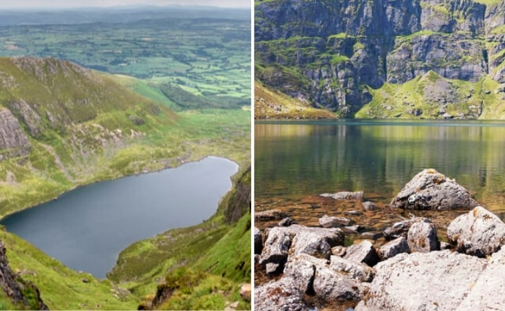
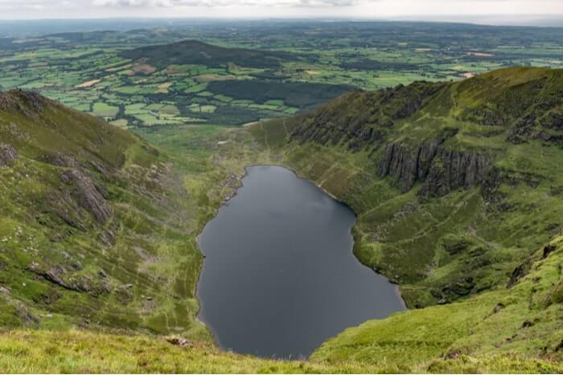

Coumshingaun Loop Walk is a moderate 4 hour (7.5 km) walking route around a natural amphitheatre of splendour and silence, the Coumshingaun Corrie Lake and the surrounding mountains in County Waterford, Ireland. Coumshingaun is one of the finest examples of a corrie or coum in Europe and the Comeragh mountains most famous landmark. Corries were formed by glacier movement during the ice age.
This area is very popular for both hikers and climbers alike with some great rock climbs to be had and also some ice climbing in winter. This walking route starts in the traditional and most gentle approach to the mountain, parking at Kilclooney bridge (Grid.Ref 348115) and entering a gate and crossing a stream.
The paths here is not that obvious but keep aiming at the right / northern slopes of the mountain and the track becomes more obvious. An alternative start point for this walk is the official car park to the south in the woods
As a general rule, it is best to be over-prepared than under-prepared. Waterproof and windproof clothing are essential and strong walking boots are also advised. Walkers should carry enough food and water for the walk and for emergencies as well as a first aid kit. You are also advised to inform someone of your intended route before you leave.
The cliffs behind the lake rise straight up to an awe inspiring 365 metres (1200) feet vertically above the lake. The highest point in the Comeraghs at 792 metres is very close to Coumshingaun and is shown on this map.
In years gone by a man named Jim Fitzgerald (1891-1959), a WWI veteran who was also known as the ’Hermit of Lackendara’ returned from the war and decided to live the rest of his life here in a cave at the edge of the lake. The Coumshingaun lake has also been used for cold water swimming training by some endurance swimmers.
There is a cliff and climbing route here known as Carraig an Fhiolair (Rock of the Eagle) which probably goes back to when Coumshingaun was a breeding site for both Golden and White Tailed Eagles before 1855.
Now the mountains are regularly home to Red Grouse, Hen Harrier, Wheatear, Siskin and Crossbill and less common here are White-tailed Eagles, Hobby, Dotterel, Long-tailed Skua, Nightjar, Black Redstart, Ring Ouzel.